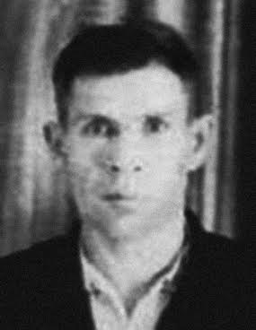
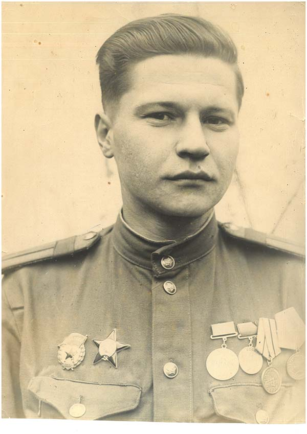
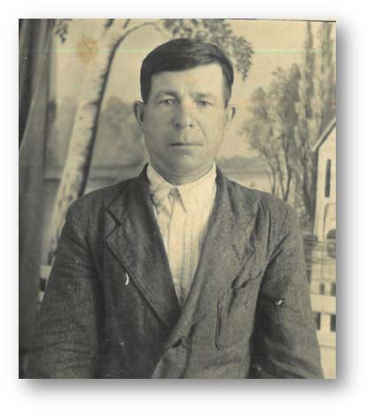
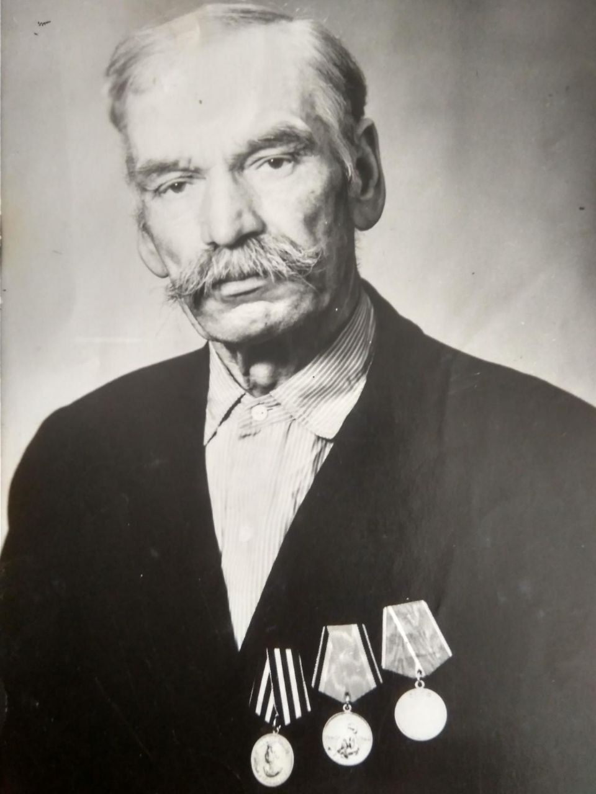
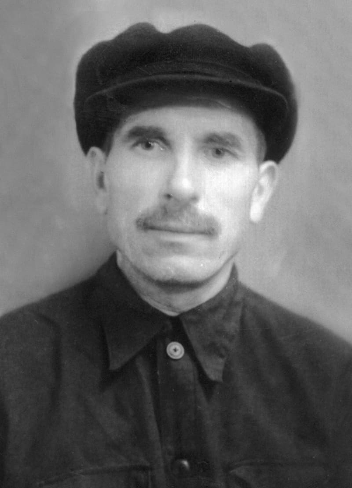

Самые ценные истории не в книгах, а в сердцах наших предков. Погрузитесь в атмосферу Великой Отечественной войны через глаза тех, кто её пережил. На этой странице вы найдете трогательные рассказы очевидцев, которые позволят вам ощутить всю значимость тех событий. Добро пожаловать в мир истории, рассказанной теми, кто её создал
Герой зимней войны
"Посвящается моему троюродному деду Турцевичу Николаю Федоровичу"
Титова И.Н. преподаватель УО ВГИК
Родился в 1914 году в деревне Колбасичи Речицкого уезда Минской губернии в крестьянской семье. Белорус. Окончил среднюю школу. Работал в колхозе. В Красной Армии с 1936 года. С 1937 года курсант Вяземского военного пехотного училища, которое закончил в 1939 году. Участник советско-финской войны 1939-1940 годов. Командир взвода моторизованной роты 175-го отдельного разведывательного батальона (150-я стрелковая дивизия, 13-я армия, Северо-Западный фронт) кандидат в члены ВКП(б) лейтенант Николай Турцевич отличился 14 февраля 1940 года в районе мыса Патаниеми. Получив задачу разведать систему огня на мысе Патаниеми, Николай Турцевич со своим взводом подошёл к проволочному заграждению, проделал в нём проходы и атаковал противника, в результате чего была вскрыта вражеская система огня. Но командир взвода пал смертью храбрых в этом бою 14 февраля 1940 года. Похоронен вблизи посёлка Сапёрное Приозерского района Ленинградской области, недалеко от места гибели. Указом Президиума Верховного Совета СССР от 7 апреля 1940 года «за образцовое выполнение боевых заданий командования на фронте борьбы с финской белогвардейщиной и проявленные при этом отвагу и геройство» лейтенанту Турцевичу Николаю Фёдоровичу посмертно присвоено звание Героя Советского Союза.
Историческая справка
В силу целого ряда причин советско-финская война 1939-1940 гг. не была предметом для гордости в советское время. Несоизмеримые потери нашей армии и финской (127 тысяч против 26-и, по данным историков), очевидное нарушение международного права и негативная реакция стран Запада на действия СССР, стремление не теребить старые раны и не портить добрые отношения с дружественным соседом — всё это играло свою роль.
В преддверии войны с гитлеровской Германией СССР нуждался в безопасности Ленинграда, второго по величине города в стране, и баз Военно-морского флота на Финском заливе и Кольском полуострове. Мало кто помнит: государственная граница проходила всего в 32 километрах от северной столицы!
Учитывая значимость Ленинграда для обороноспособности страны, Сталин предложил финнам отодвинуть границу от колыбели революции и получить взамен вдвое большую территорию, севернее, но получил отказ. Война была неизбежна. По условиям Московского мира 1940 года, финская межа отодвинулась на некоторых участках до 150 км от Ленинграда. Обезопасили также Мурманск, одну из главнейших баз Северного флота, подвинув от него границу на запад. Кроме того, под советский контроль перешло несколько военных баз на Финском заливе.
Несмотря на то, что приобретения были небольшими, они имели колоссальное значение: каждый километр сыграл свою роль во время Великой Отечественной войны. Будь граница такой, какой она была в 1939-м, Ленинград и Мурманск были бы утеряны, а с ними, возможно, была бы проиграна вся война.
Награды
- Медаль «Золотая Звезда» Героя Советского Союза;
- Орден Ленина.
Память
Его именем названа деревня Турцевичи, улица и переулок в деревне Турцевичи. Первоначально был похоронен на месте боёв. Перезахоронен (увековечен) в братская могиле (№4) в посёлке Сапёрное Приозерского района Ленинградской области. Вблизи п. Саперное (старое финское название – Валкярви, что в переводе означает «белое озеро») Приозерского района Ленинградской области расположен обелиск воинам, павшим за Родину в боях 1939-1945 годах. На гранитных плитах обелиска высечено имя Героя Советского Союза Турцевича Н.Ф. Предполагается, что это место захоронения героя.
Турцевичи (белор. Турцэвічы) (до 12 июля 1965 года Колбасичи) — деревня в Горбовичском сельсовете Калинковичского района Гомельской области Республики Беларусь. Расположение: В 7 км на северо-запад от районного центра и железнодорожной станции Калинковичи (на линии Гомель — Лунинец), 130 км от Гомеля. Имеет общую границу с деревней Горбовичи.
Храним историю своей семьи
"Посвящается моему деду Круглову Александру Степановичу"
Зуева И.А. преподаватель УО ВГИК
Родился 20 марта 1920 года в деревне Виля Выксунского района Горьковской области. Образование – средне-специальное. Мать смотрела детей, которых в семье было девять, отец работал служащим.
Александр Степанович призван в армию Выксунским РВК. Годы службы: 1940-1947 гг. Участник советско-финской войны 1939-1940 гг. Начало Великой Отечественной войны встретил в городе Ленинграде в звании краснофлотца. Участник боев на Ленинградском фронте в обороне Ленинграда. Род войск – военно-морские. Воевал на крейсере «Максим Горький» и эсминце «Славный».
Историческая справка: Крейсер «Максим Горький»
«Максим Горький» — лёгкий крейсер. Заложен 20 декабря 1936 года, спущен на воду 30 апреля 1938 года. 22 марта 1944 года крейсер был награждён орденом Красного Знамени. Исключён из состава флота 18 апреля 1959 года.
Крейсер — универсальный класс боевых кораблей, способный и к боевой работе в составе эскадры, и к автономным действиям на морских коммуникациях врага. Участвовал в отражении многочисленных авианалётов и сентябрьского штурма Ленинграда, получил восемь попаданий тяжелых снарядов и был переведён к Железной стенке торгового порта вблизи устья Фонтанки, где на нём производился ремонт. Затем корабль, меняя позиции, участвовал в обороне и прорыве блокады Ленинграда в составе 2-й группы, базировавшейся в Торговом порту.
Живучесть корабля при боевых повреждениях обеспечивалась не только броневой защитой бортов, палубы и траверзов. Тщательно рассчитанное деление корпуса на 19 водонепроницаемых отсеков обеспечивало возможность сохранения положительной плавучести при пробоинах ниже ватерлинии и выравнивание корпуса при возникновении крена и дифферента. Водонепроницаемость достигалась тем, что в прочных переборках от самого днища и вплоть до броневой палубы не было никаких дверей и люков: хочешь попасть из первого котельного отделения во второе — ступай через верхнюю палубу! Зато при затоплении трех смежных отсеков крейсер мог оставаться на плаву, двигаться, а в некоторых случаях и вести бой. Восемь отсеков из девятнадцати в середине корпуса занимали ходовые системы, скомпонованные в два автономных эшелона.
Главная энергетическая установка крейсера проекта 26-бис «Максим Горький» по размещению и составу была идентичной крейсерам проекта 26. Она находилась в восьми смежных отсеках в средней части корпуса, изолированных друг от друга - для того, чтобы одним снарядом никогда не выбило всю энергетику. Два главных турбозубчатых агрегата номинальной проектной мощностью по 55000 лошадиных сил каждый, размещались автономно в носовом и кормовом машинных отделениях. Турбины были итальянского образца, но собирались на Харьковском электромеханическим и турбогенераторным заводе. Надо сказать, они показали в эксплуатации даже большую мощность, чем те, что итальянцы делали сами.
22 марта 1944 года указом Президиума Верховного Совета СССР за образцовое выполнение боевых заданий командования на фронте борьбы с немецко-фашистскими захватчиками и проявленные при этом личным составом доблесть и мужество крейсер «Максим Горький» был награждён орденом Красного Знамени.
Историческая справка: Эскадренный миноносец "Славный"
1936 - 1964 Эскадренный миноносец проекта 7У "Славный" (с 6 февраля 1960 года - корабль-цель "ЦЛ-44") (с 30 июня 1961 года - судно-мишень "СМ-20") Заложен 31 августа 1936 года (Балтийское объединение, Ленинград), перезаложен 31 января 1939 года, спущен 19 сентября 1939 года, вступил в строй 31 мая 1941 года. 19 июня 1941 г вошел в состав Балтийского флота. Базировался на Кронштадт.
Начало войны эсминец встретил в море у полуострова Ханко. Участвовал в эвакуации гарнизона Таллина и полуострова Ханко. 3 ноября 1941 года по ошибке потопил огнем главного калибра катер МО №112. Всего за полгода войны «Славный» прошел 3707 миль за 67 ходовых дней, выпустил 966 130-мм и 1003 76-мм снаряда.
В 1942 и 1943 годах эсминец непосредственно в боевых действиях не участвовал, за исключением отражения нескольких воздушных налетов. Участвовал в Выборгской с 10 по 20 июня 1944 года наступательной операции. Прошел ремонт и модернизацию с 10 июля 1947 года по 6 июля 1955 года. 6 февраля 1960 года переклассифицирован в корабль-цель, а 30 июня 1961 года - в плавучую мишень. Исключен из списков ВМФ 4 марта 1964 года и разобран на металл в Лиепае.
ТТД: Водоизмещение стандартное 1850 т, нормальное 2150 т, полное 2400 т. Размерения 112.5 х 10.2 х 4.2 м. ГЭУ котлотурбинная, двухвальная: ТЗА "ГТЗА-24", 60000 л.с. 4 котла Скорость 39.6/20 узла, дальность 1400 миль. Вооружение: 4 - 130/50 в установках Б-13-2 , 2 - 76/55 в установках 34-К, 3 - 45/46 в установках 21-К (демонтированы к 1943 г.), 5 - 8 х 1 х 37/67.5 мм в установках 70-К, 4 - 12.7 мм пулемета ДШК, 2 х 3 533 мм торп. аппарата 1-Н, 6 торпед 53-38, 10 глубинных бомб Б-1 и 20 глубинных бомб М-1 58 мин КБ или 62 мины обр. 1926 года Экипаж 192 матроса и старшины, 15 офицеров.
Из воспоминаний Александра Степановича:
«Помимо несения службы на крейсере и выполнения боевых задач, вечером мы (краснофлотцы) отправлялись патрулировать город Ленинград для поддержания в нем правопорядка и борьбы с мародерством. Был ужасный голод, продовольствия не хватало, люди гражданские умирали голодной смертью. Сам, получив паек, относил часть его своей сестре, которая находилась в больнице. В часы затишья со стороны противника, среди членов экипажа, устраивали матчи по футболу».
.jpg)
Выписка из архивных документов к награждению Орденом Красной Звезды с описанием подвига (19.09.1941 г.)
В сентябре месяце 1941 года краснофлотец Круглов был послан с крейсера «Максим Горький» на сухопутный фронт, где участвовал в боях против немецких захватчиков в составе 10-й морской дивизии 98 стрелкового полка. В боях под Стрельной краснофлотец Круглов А.С. 19 сентября 1941 г. получил осколочное ранение позвоночника и шеи. Будучи раненым, участвовал в боях в составе особого морского батальона под Петергофом, был контужен (трещина правой стороны черепа и потеря чувствительности всего правого бока). В боях на сухопутном фронте и участвуя в выполнении боевых заданий на крейсере краснофлотец Круглов проявил себя как стойкий, мужественный и преданный родине боец. По выполнению кораблем боевых заданий по разгрому немецких оккупантов под Ленинградом. Механизмы его заведывания работали безукоризненно. Выписавшись из госпиталя, продолжил воевать, дошел до Кенигсберга в апреле 1945 года. В 1980 г. вместе с ветеранами Великой Отечественной войны на «Поезде Памяти» посетили места боевых сражений, в том числе и Калининград. Воинское звание – старшина 2-й степени.
Награжден:
22.12.1942 Медаль за оборону Ленинграда
06.08.1944 Орден Красной Звезды
09.05.1945 Медаль за победу над Германией в Великой Отечественной войне 1941-1945 г.
После демобилизации вернулся на родину в город Выкса и работал на стройках, слесарем. Позже женился и переехал в Белоруссию в город Городок Витебской области. Работал на промкомбинате. В 50-е годы началось массовое освоение целины.
В марте 1954 г на пленуме ЦК КПСС принято решение «О дальнейшем увеличении производства зерна в стране и освоение целинных и залежных земель». Конкретные задачи для Казахстана, Сибири, Урала, Поволжья, Северного Кавказа: расширить посевы зерновых культур в 1954-1955 гг. за счет освоения целинных и залежных земель не менее чем на 13 млн. га и получить в 1955 г оду с этих земель 1100-1200 млн. пудов зерна, в том числе 800-900 млн. пудов товарного зерна. В стране развернулось всенародное движение за резкое развитие сельского хозяйства. Освоение целинных земель получило всеобщее признание и вызвало мощный трудовой подъем. Основная часть плодородной целины в Казахстане находилась в отдаленных и малообжитых местах. Не хватало людских ресурсов для комплектования целинных хозяйств, кадры привлекались из других районов страны. Работавших на целине стимулировали материально, поддерживали льготами, премиями выполнившим производственные планы, надбавками за выслугу лет.
Как и многие молодые люди тогда, отправился в 1958 году в Казахстан на уборку зерновых, а через 2 года переехала туда и семья: жена и четверо детей, в город Кустанай (теперь Костанай). Спустя годы тяжелого физического труда былые ранения дали о себе знать, здоровье ухудшилось. Необходимо было собрать документы, подтверждающие ранения. Вот тогда и выяснилось, что он числился без вести пропавшим, а многие его боевые награды находились в архивах Гатчины.
Гатчина — город в России, административный центр Гатчинского муниципального района Ленинградской области. Город воинской славы России. Находится в юго-западной части области, в 42 км от центра Санкт-Петербурга.
Вот так спустя годы была исправлена допущенная ошибка. Круглов Александр Степанович умер в 23 мая 2004 году. В г. Костанай в школьном музее боевой славы хранятся военная форма, награды и альбом с фотографиями как память о его героическом прошлом.
Военный путь и семейная трагедия
"Посвящается моему прадедушке Евстафьеву Пётру Васильевичу "
Титов А.М. учащийся УО ВГИК
Евстафьев Пётр Васильевич родился 8 сентября 1918 года в деревне Рябово Суражского района Витебской области в многодетной крестьянской семье. В семье было шестеро детей: Захар, Ануфрий, Пётр, Семён, Анна и Лукерья. Окончил 4 класса. Работал сапожником в Сураже.
В 1939 году Пётр Васильевич был призван на срочную службу в ряды Красной Армии. С началом Великой Отечественной войны он воевал в составе 15-й гвардейской стрелковой дивизии, 44-го гвардейского стрелкового полка.
Принимал участие в обороне Сталинграда и был награждён медалью «За оборону Сталинграда». За проявленное мужество в бою 11 июля 1943 года, когда он подавил две миномётные точки противника и станковый пулемёт из своего миномёта в районе совхоза Батрацкая Дача, гвардии старший сержант Евстафьев Пётр Васильевич 15 июля 1943 года был представлен к награде «За отвагу».
Вместе со своим полком он прошёл боевой путь до Берлина. За годы войны Пётр Васильевич был награждён:
- Орденом Красной Звезды
- Орденом Отечественной войны
- Медалью «За боевые заслуги»
- Медалью «За освобождение Праги»
- Медалью «За победу над Германией в Великой Отечественной войне 1941–1945 гг.»
После окончания войны был уволен в запас в звании старшины.
Возвращение и память
Вернувшись в родную деревню, Пётр Васильевич узнал о трагической гибели своих родителей, которые были расстреляны немцами вместе с другими мирными жителями. Они были похоронены в братской могиле, на месте которой установлен мемориал (посмотреть на карте). Некоторое время жил у сестры Анны в соседней деревне Марченки. Работал в колхозе, женился и воспитал троих детей, включая мою бабушку Людмилу.
О войне прадедушка почти ничего не рассказывал, предпочитая отшучиваться или отмалчиваться, даже в кругу самых близких. Пётр Васильевич прожил достойную жизнь и скончался 9 сентября 1994 года, на следующий день после своего 76-летия.
Мемориал «Погибшим землякам» расположен на выезде из Суража в сторону Рябово слева от дороги. Место — роща сосен и молодых берёзок с видом на юго-восточный край Суража.
Дважды солдат
"Посвящается моему прадеду Шило Ивану Степановичу"
Титова И.Н. преподаватель УО ВГИК
Шило Иван Степанович родился 3 августа 1899 года в деревне Рудня-Горбовичская Калинковичского района Полесской области (ныне Гомельская область) в многодетной крестьянской семье. У него было четыре брата (Николай, Андрей, Пётр, Григорий) и сестра Анна. Семья жила зажиточно благодаря наличию пилорамы. Окончил два класса начальной школы.
До войны Иван Степанович работал плотником. Вместе с отцом и братьями строили дома в своей деревне и городе Калинковичи, многие из которых сохранились до сих пор (есть одна отличительная деталь на дверях – орнамент в виде солнца).
К началу Великой Отечественной войны Ивану Степановичу было 42 года. У него уже была семья: жена Змушко Ольга Сидоровна и четверо детей — Иван, Нина (погибла, подорвавшись на мине во время войны), Георгий и Александр. Они жили в деревне Рудня-Горбовичская.
В июле 1941 года Иван Степанович был призван в ряды Красной Армии и направлен на фронт. Служил в составе 117-го стрелкового полка 23-й стрелковой дивизии. В сентябре 1941 года, во время боёв под Смоленском, попал в плен. Там ему пришлось многое пережить. Позже он сумел бежать из плена и вернуться домой, где скрывался от немцев.
После освобождения Калинковичей и района в январе 1944 года вновь был призван в Красную Армию. За время службы он получил два ранения в ногу — 15 июля 1944 года и 1 марта 1945 года.
За боевые заслуги Иван Степанович был награждён медалями:
- «За отвагу»
- «За освобождение Варшавы»
- «За взятие Берлина»
- «За победу над Германией в Великой Отечественной войне 1941–1945 гг.»
О войне Иван Степанович вспоминал с неохотой, но иногда делился историями с близкими. Из его воспоминаний:
«Перед боем всегда выдавали по 100 грамм водки или спирта… Когда шли в атаку, не смотрели, что впереди: болото или речка. Зимой по колено или по пояс в воде форсировали реки, подолгу приходилось лежать в снегу»
Из-за сильного обморожения ног зимой и летом не снимал валенки, старался согреть ноги горячим песком и крапивой, но тепла всё равно не чувствовал. Награды Иван Степанович не носил и хранил их в коробке, фотографироваться не любил.
Скоропостижно скончался в феврале 1970 года в возрасте 70 лет.
Награда нашла своего героя
"Посвящается моему прадедушке Коледенку Тимофею Ивановичу"
Воробьева Д. учащаяся УО ВГИК
Тимофей Иванович Коледенок родился в 1893 году в деревне Писарево Сиротинского района (ныне Шумилинский район) Витебской области. До войны работал в колхозе «Писарево», активно участвовал в трудовой жизни. Был женат на Коледенок Анне Ивановне, в девичестве Новикова. В семье родились двое детей: дочь Ольга и сын Фёдор.
Во время Великой Отечественной войны некоторое время Тимофей Иванович находился в партизанах. Осенью (22 сентября 1942 года) в возрасте 49 лет был призван в ряды Красной Армии, направлен на 2-й Украинский фронт. Служил заряжающим 76-миллиметровой пушки в 123-м стрелковом полку 373-й стрелковой дивизии. Принимал активное участие в боевых действиях. 13 июля 1944 года при форсировании реки Пруд под городом Яссы получил осколочное ранение в правый коленный сустав. Находился на лечении в госпитале по 13 октября 1944 года. Был демобилизован 4 октября 1945 года.
25 августа 1949 года награждён медалью «За боевые заслуги».
Умер Тимофей Иванович 15 февраля 1976 года.
Некоторые личные вещи Тимофея Ивановича (бритва «Найка», очки и футляр) и документы (военный билет, красноармейская книжка и пенсионное удостоверение члена колхоза) хранятся в Шумилинском историко-краеведческом музее.
Страница Тимофея Ивановича на сайте «Память народа»
Один из двадцати тысяч: путь солдата
"Посвящается моему прапрадедушке Дедку Дмитрию Тимофеевичу"
Титов Никита, 9 лет
Дмитрий Тимофеевич Дедок родился 4 сентября 1897 года в деревне Рудня-Горбовичская Калинковичского района Гомельской области. Безграмотный. Работал на тряпичной фабрике. С началом Великой Отечественной войны, в возрасте 44 лет, Дмитрий Тимофеевич был призван в Красную армию. Служил в пехоте. Летом 1942 года вместе с командующим 2-ой ударной армией попал в окружение.
Историческая справка
2-я ударная армия, созданная в апреле 1942 года, предназначалась для прорыва блокады Ленинграда. Однако к концу весны она оказалась в тяжелом положении. В ходе Любанской операции части армии продвинулись глубоко в немецкую оборону, но из-за нехватки снабжения и несогласованных действий командования оказались в окружении. В июне 1942 года немецкие войска замкнули «коридор», связывавший армию с основной линией фронта. В окружении осталось около 20 тысяч человек, включая командующего — генерал-лейтенанта Андрея Власова. Попытки деблокировать армию не увенчались успехом, и большая часть её личного состава погибла или попала в плен. Потом плен и концентрационный лагерь. Предположительно, находился в Западной Германии, в концлагере Бухенвальд или его внешних лагерях. Освобождён американскими войсками в апреле 1945 года. Домой вернулся, вероятно, летом 1946 года.
До войны был женат на Евгении Степановне Турцевич. У супругов было трое детей: сын Алексей (Дедок Алексей Дмитриевич, 1924 год рождения — участник партизанского движения в Беларуси), а также дочери Мария и Нина. Евгения Степановна весной 1944 года скончалась от тифа.
После войны Дмитрий Тимофеевич женился второй раз, работал в колхозе. Дожил до преклонного возраста, скончался 10 марта 1997 года, прожив 99 лет.
Ссылка на сайт Музейный комплекс «Дорога Памяти»
Ссылка на страницу Дедка Дмитрия Тимофеевича Галерея памяти участников ВОВ